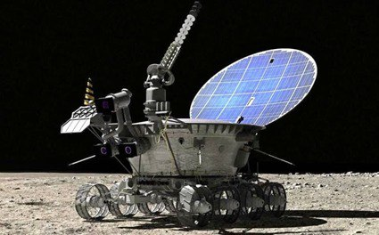

Он используется в огромном количестве самых разных мест для уникальных целей.
Данный вид ТС используется для разных целей, иногда для удобства (доставка, умный домашний пылесос), иногда для исследования труднодоступных мест (дроны под водой или даже d космосе на другой планете), иногда дроны используются даже в военных целях (для разведки), это ещё не все варианты, как и где можно использовать беспилотники. Со временем вариантов использования становится все больше и больше, дронами все чаще пользуются крупные корпорациями на складах.
Дроны в космосе
Марсоходы и луноходы полезны тем, что отправлюят на Землю образцы грунта и фотографии поверхности другого космического тела. Они считаются беспилотными, поскольку в большей степени работают на собственных алгоритмах: расстояние между космическими телами огромно и сигналы идут слишком долго, поэтому проще отправлять команды из центра управления только когда что-то пойдёт не по плану, например, застревание в яме. В будущем подобные программы будут проводиться и на других спутниках и планетах.
Алгоритм посадки на поверхность Марса из его атмосферы

Аппарат «Луноход-1»
Аппарат космической миссии «Марс 2020»
Процесс доставки Марсохода обратно на Землю
Заводы и склады
Кратко говоря, роботы-дроны передвигаются по складу по специальным линиям, доставляя стелаж с нужным товаром до человека, оформляющего заказ. Это здорово экономит силы и время сотрудника, ведь ему не приходится ходить по огромному помещению с целью найти тот или иной товар. Он может посидеть посидеть на стуле.
ОПТ — это закупка продукции как первый этап движения товара от производителя к покупателю

Робот дрон передвигает стеллаж на складе крупной кампании, помогая курьеру
Робот дрон движется по специальным линиям на автоматизированном складе
Автоматизированный склад с роботами Amazon
Смотреть подробнее:
Последняя миля
Смешной робот-курьер яндекс ровер rover
Квадрокоптер на последней миле
Rover-ы помогают доставлять еду и другие посылки до клиентов по воздуху, а также на равне с пешеходами. Сомневаемся, что они полностью заменят курьеров в будущем.
Беспилотные корабли
В Норвегии: 27 сентября 2022 года в Норвегии был введен в эксплуатацию беспилотный электрический пассажирский паром, который, как утверждается, является первым в своем роде. Судно разработано командой Норвежского университета науки и технологий (NTNU), оно получило название MilliAmpere 2.
В рамках испытательного периода, который продлится до середины октября 2022 года, паром будет перевозить пассажиров по главному каналу в городе Тронхейм. Хотя паром может вместить до 20 пассажиров, в период испытаний он будет перевозить не более 12 человек одновременно. По данным NTNU, это первый случай, когда самоходный электрический пассажирский паром был запущен в опытную эксплуатацию на городских водных путях.
Беспилотный паром в Норвегии
В России: «У нас есть тема автономного судовождения. И первый проект мы хотим запустить между портами Калининград и Усть-Луга, — сказал замглавы Минтранса. — Есть амбициозная цель — к 2030 году построить беспилотный мост между Европой и Азией. Причем мы будем добиваться того, чтобы мы могли подхватывать любой беспилотник — как китайский, как Volvo, так и любой европейский — и доводить его транзитом до пункта назначения».

Планы Минтранса по созданию и использование беспилотных кораблей в будущем
В США: Будущий надводный боевой корабль (FSC) ВМФ США, вероятно, будет как беспилотным, так и опционально беспилотным кораблём в рамках растущего семейства систем, поскольку военно-морской флот ориентируется на то, что пилотируемое / беспилотное командование может обеспечить наибольшие преимущества на разных этапах военных действий.
Ранее официальные лица представляли следующие варианты кораблей программы FSC - большой, малый и беспилотный - например, крейсер или эсминец, корабль прибрежной зоны (LCS) или фрегат и что-то похожее на среднетонажный беспилотный надводный корабль (MDUSV), над которым работает Управление военно-морских исследований (ONR). Однако, чиновники всё чаще говорят о беспилотных и опционально беспилотных судах как о самостоятельных платформах.
Беспилотный корабль ввс США
На прошлой неделе во время ежегодной конференции «Technology, Systems and Ships» Американского общества морских инженеров Глава отдела эсминцев и будущих кораблей капитан первого ранга Кайл Гант заявил, что ряд вопросов общей картины программы привели к отпочкованию беспилотных и опционально беспилотных судов.
Во-первых, как уверяет ВМФ, при использовании беспилотной системы управление и контроль осуществляются в конкурентной коммуникационной среде, а возможно и при разрушенных системах связи. Как в этих условиях сохранять взаимодействие? И какова роль беспилотного судна в нулевой фазе операций, когда для выполнения основной задачи ВМФ требуется присутствие людей?
«Как я могу использовать эти системы для получения господства в море, сдерживания, традиционными задачами ВМФ, которые я должен выполнять?» - сказал Гант, отметив, что опциональные беспилотные суда могут стать решением. Во время задачи присутствия «фаза 0» суда могут быть полностью укомплектованы и иметь место стоянки судна, столовые и другие объекты для проживания и работы экипажа.
«Опционально устанавливаются системы беспилотной части корабля. Оказавшись в «фазе 2» с задачей с высоким уровнем риска, в условиях большой неопределённости среди пилотируемых платформ - я могу убрать с судна людей и отплыть, а само судно использовать в беспилотном режиме даже для выполнения задач с риском уничтожения судна, к чему я не был бы готов при наличии экипажа. Вот так мы пришли к опциональным беспилотникам. Они хорошо вписались в наши военные игры, имея системы вооружения, которые способны дополнительно усилить пилотируемый корабль.
Гэнт отметил, что беспилотные надводные корабли могут быть более доступны для захвата или перемещения противника на судно, чем беспилотные подводные аппараты или беспилотные летательные аппараты. Такая уязвимость создает ряд ограничений для военно-морских сил, которые хотели бы использовать чисто беспилотные USV [5], в первую очередь, для разведки, наблюдения и рекогносцировки (ISR [6]) и задач по борьбе с ISR, которые требуют сохранности беспилотного судна после выполнения задачи
Военно-морской флот уже ощутил последствия уязвимости своих медлительных беспилотных систем, таких как БЛА, захваченный китайскими войсками в декабре 2016 года, и UUV, захваченный войсками Хути у берегов Йемена в январе. Тоже ждёт тип USV рассуждает Гант, и инциденты доказывают необходимость на USV либо систем самообороны против захвата, либо систем защиты данных, собранных ими, в случае их захвата силами противника.
Гант отметил, что несмотря на эту незащищенность ВМФ уверены, что беспилотные и опционально беспилотные надводные корабли увеличат боевые возможности флота ВМС.